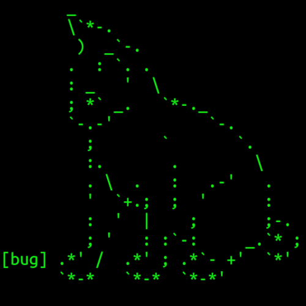

My name is Gabriel G. de Brito and I'm a computer science student at computing department of the Federal University of Paraná. I'm mostly interessed in functional and low-level programming. Also, I have some experience with a lot of programming languages. My favorites are Lua, C, Go and Lisp, and I have some experience in Rust, Haskell, Python and front-end development. Currently, I'm focusing in studying C for systems programming and hardware. My ultimate goal is to write an entire operational system from scratch for fun.
I'm also a Unix hacker. I like to customize Linux systems and explore them to learn how they work.
Besides that, I'm interested in philosophy of technology, artificial intelligence, computer networks, category theory and programming languages design.
When I'm not studying computing, I like cars, literature, photography, anime and hiking!
